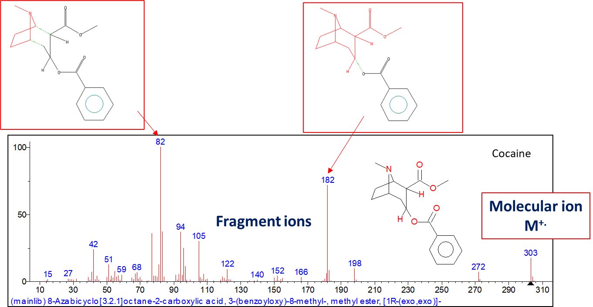
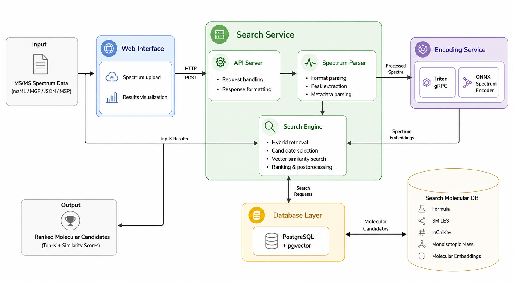
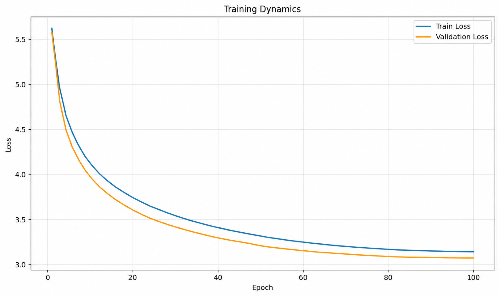
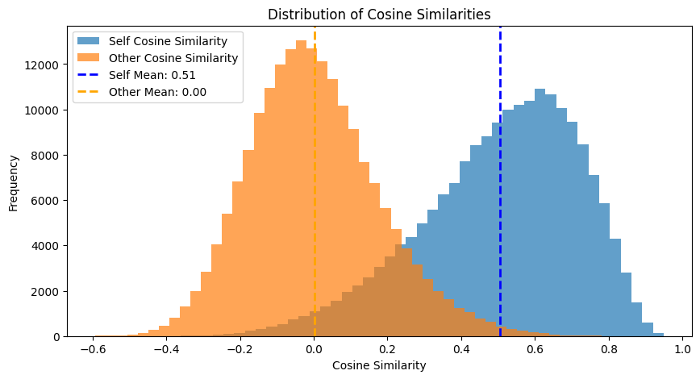

Contrastive Spectrum-Molecular Pretraining (CSMP):
Building a Chemical Search Engine for Matching Tandem Mass Spectra with Molecular Structures
Motivation and Key Problem
Tandem mass spectrometry is one of the most powerful tools for molecular analysis, yet practical annotation remains difficult. Classical library-based matching is highly effective for known compounds but weak for novel molecules, structural isomers, and underrepresented chemical regions.
In real workflows, heterogeneous file formats, metadata inconsistency, and instrument-dependent fragmentation patterns create a large amount of unannotated spectral data. The core thesis challenge was to bridge this gap by building a reproducible, scalable, and deployable retrieval system rather than a model-only prototype.

Research Questions and Goals
How can heterogeneous public MS/MS data be curated into a leakage-aware benchmark for reliable training and evaluation?
How do modern cross-modal dual encoders perform under one unified protocol (JESTR vs CSU-MS2)?
How can the best model be integrated into a robust, low-latency chemical search engine for real usage?
Architecture and Component Rollup
The deployed CSMP system is a modular pipeline designed for practical operation: web interface for spectrum submission, FastAPI orchestration, spectrum preprocessing and metadata parsing, CSU-MS2 inference via Triton, and mass-constrained embedding retrieval over an indexed molecular database.

Input files: mzML, MGF, MSP, JSON.
FastAPI validates requests and coordinates batching.
Preprocessing standardizes spectra and precursor metadata.
Triton serves CSU-MS2 spectrum embeddings.
Mass filter narrows candidates before similarity search.
UI presents ranked candidates and molecule details.
System Demo
Model Training and Retrieval Behavior




Final Results
| Model | KL | Hit@1 | Hit@100 | Recall@1 | Recall@100 |
|---|---|---|---|---|---|
| JESTR | 1.6815 | 0.1137 | 0.8660 | 0.0988 | 0.8510 |
| CSU-MS2 | 3.4280 | 0.2147 | 0.9053 | 0.1737 | 0.8719 |
Conclusion
This work demonstrates that scalable AI-assisted spectrum annotation requires more than an accurate model. The main contribution is a complete research-to-deployment pipeline: curated data, controlled benchmarking, and a practical retrieval system with measurable robustness and speed.
The resulting engine is best interpreted as a high-quality candidate generation and ranking tool that supports expert chemical analysis under realistic laboratory conditions.
Citation
@misc{golov_lukmanov_2026_csmp,
title={Contrastive Spectrum-Molecular Pretraining (CSMP): Building a Chemical Search Engine for Matching Tandem Mass Spectra with Molecular Structures},
author={Ivan Golov and Rustam Lukmanov},
year={2026},
institution={Innopolis University},
url={https://github.com/IVproger/csmp_search_engine}
}